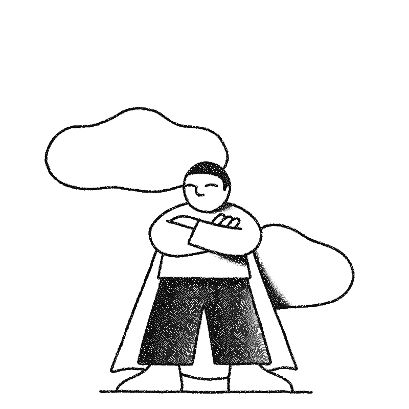

01
Big Data Bowl
Análisis de tracking data NFL para predecir yards after contact usando modelos de machine learning.
Ver proyecto →
Data Scientist & Developer
Abogado, economista y doctor en formación convertido en científico de datos. Estudié Derecho y Economía en el ITAM, una Maestría en Derechos Humanos en doble grado ITAM–Universidad de Génova, y un Doctorado en la UP — actualmente en proceso de titulación. Hoy curso la Maestría en Data Science, Big Data y Business Analytics en la Universidad Complutense de Madrid.
Me apasionan los datos, el diseño y la programación. Este año tengo en la mira el Big Data Bowl. Creo que el análisis de datos bien aplicado puede cambiar la forma en que entendemos el mundo — desde el deporte hasta los derechos humanos.

Análisis de tracking data NFL para predecir yards after contact usando modelos de machine learning.
Ver proyecto →
Dashboard interactivo para visualizar violaciones de derechos humanos con fuentes abiertas y NLP.
Ver proyecto →
Este mismo sitio — diseñado desde cero con HTML, CSS y JS vanilla. Concepto Field Notes.
Ver proyecto →
Clasificación de sentimientos en tweets sobre elecciones usando BERT y modelos de lenguaje.
Ver proyecto →
Serie de tiempo con ARIMA y Prophet para predecir indicadores macroeconómicos de México.
Ver proyecto →
Análisis de redes de corrupción en contratos públicos usando grafos y centralidad.
Ver proyecto →
Sistema de recomendación colaborativo para plataforma de streaming con matrix factorization.
Ver proyecto →
Detección de objetos en tiempo real en imágenes satelitales con YOLO y transfer learning.
Ver proyecto →
Arquitectura ETL con Airflow y dbt para procesar 50M de registros diarios en producción.
Ver proyecto →
Fine-tuning de LLaMA 2 para clasificación legal en español con documentos del poder judicial.
Ver proyecto →